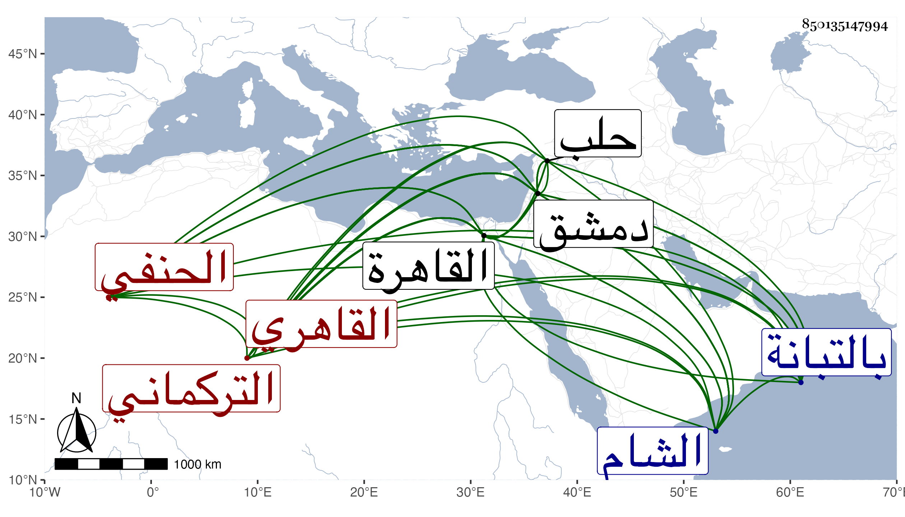

0902Sakhawi.DawLamic.ITO20230111-ara1.EIS1600.850135147994
Biography ID: 850135147994
524
محمد بن جلال بن أحمد بن يوسف الشمس التركماني الأصل القاهري الحنفي أخو الشرف يعقوب الآتي والمذكور أبوهما في الدرر ويعرف بابن التباني بمثناة وموحدة ثقيلة نسبة لنزول التبانة ظاهر القاهرة وجلال مختصر من لقب أبيه جلال الدين غلب عليه واسمه رسول . ولد في حدود السبعين وسبعمائة بالتبانة وأخذ عن أبيه وغيره ومهر في العربية والمعاني والبيان وشارك في غيرها وأفاد ودرس واتصل بالمؤيد حين كونه نائب الشام فقرره في نظر الجامع الاموي وفي عدة وظائف وباشرها مباشرة غير مرضية ثم ظفر به الناصر فأهانه وصادره فباع ثيابه واستعطى باليد فساءه وأحضره إلى القاهرة ثم أفرج عنه فلما قدم المؤيد القاهرة عظم قدره ونزل له الجلال البلقيني عن درس التفسير بالجمالية واستقر في قضاء العسكر ثم رحل مع السلطان في سفرته لنوروز فاستقر قاضي الحنفية بدمشق وباشرها مباشرة لا بأس بها ولم يكن يتعاطى شيئا من الاحكام بنفسه بل له نواب يفصلون القضايا على بابه بالنوبة ودرس بأماكن واستدعى به السل ... هو بحلب من دمشق ليرسله الى ابن قرمان فاستعفى وأجيب وعاد الى دمشق وكانت له في كائنة قانباى اليد البيضاء . مات بدمشق في رابع عشرى رمضان سنة ثمان عشرة وكان جيد العقل ذكره شيخنا في انبائه وأرخه المقريزي بيوم الأحد ثامن عشرى شعبان فالله أعلم .
